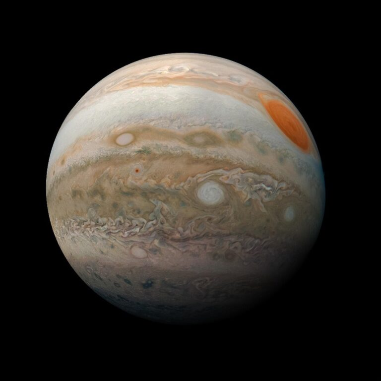
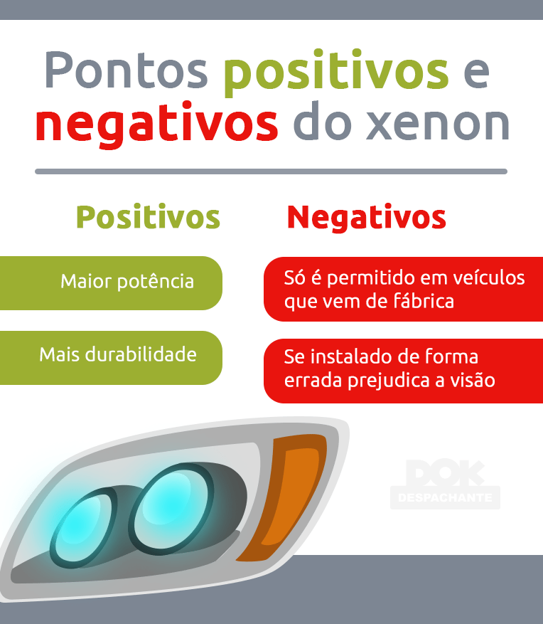
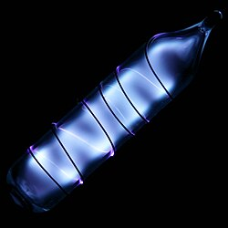

O xenônio foi descoberto em julho de 1898 por William Ramsay e Morris Travers no University College London. Eles já haviam extraído neônio, argônio e criptônio do ar líquido e se perguntavam se este continha outros gases. O rico industrial Ludwig Mond lhes deu uma nova máquina de ar líquido, e eles a utilizaram para extrair mais do raro gás criptônio. Por meio de repetidas destilações, eles finalmente isolaram um gás mais pesado, que, ao ser examinado em um tubo de vácuo, emitiu um belo brilho azul. Eles perceberam que se tratava de mais um membro do grupo de elementos gasosos "inertes", como eram conhecidos na época devido à sua falta de reatividade química. Deram ao novo gás o nome de xenônio. Foi esse gás que Neil Bartlett demonstrou posteriormente não ser inerte, ao sintetizar um derivado de flúor em 1962. Até o momento, mais de 100 compostos de xenônio foram sintetizados.

O xenônio é cerca de 2,6 vezes ma mais abundante em Júpiter do que no Sol e na Terra; A origem dessa abundância ainda não é plenamente explicada.
O xenônio é encontrado livremente na atmosfera em quantidades extremamente baixas, uma parte por 20 milhões. Apesar de ser um gás nobre, pode reagir com o flúor e o oxigênio. Também pode ser encontrado em gases emitidos por determinadas fontes minerais. Devido à sua baixa abundância natural, o xenônio é significativamente mais caro do que os gases nobres mais leves. Comercialmente, o xenônio é obtido como um subproduto do processo de separação do ar em oxigênio e nitrogênio, por meio de sucessivas etapas de destilação.
O uso principal e mais famoso deste gás é na fabricação de dispositivos emissores de luz, tais como lâmpadas bactericidas e estroboscópicas, tubos eletrônicos, bronzeamento artificial e flashes fotográficos, assim como em lâmpadas para excitar laser de rubi que geram luz coerente.
O xenônio não apresenta função biológica essencial conhecida nos organismos vivos. Entretanto, possui aplicações na área da saúde, sendo estudado e utilizado em determinados procedimentos médicos e como anestésico em específicas. situações Portanto, sua importância está principalmente relacionada às suas aplicações tecnológicas e médicas, e não a uma função biológica natural.
O xenônio é um gás nobre raro e de elevado valor econômico, principalmente devido à sua baixa abundância na atmosfera O mercado global deste gás especial movimenta centenas de milhões de dólares, com o preço do litro de xenônio de alta pureza frequentemente ultrapassando os US$ 100 devido à complexidade de sua extração por destilação criogênica do ar.
O xenônio apresenta baixo impacto ambiental devido à sua baixa reatividade e à pequena quantidade presente naturalmente na atmosfera. Entretanto, sua extração e purificação exigem processos industriais que envolvem consumo de energia.
| Propriedade | Xenônio puro (Xe) | Compostos de xenônio (ex: XeF₂, XeF₄) |
|---|---|---|
| Toxicidade | Em sua forma elementar não é considerado tóxico, em baixas concentrações | Altamente tóxicos devido ao seu forte poder oxidante |
Este gás é inerte e classificado como um asfixiante simples. A inalação em concentrações excessivas pode causar tonturas, náuseas, vômitos, perda de consciência e morte. A morte pode resultar de erros de julgamento, confusão ou perda de consciência que impeçam o resgate. Em baixas concentrações de oxigênio, a inconsciência e a morte podem ocorrer em segundos, sem aviso prévio.
Apesar dos o xenon também é muito prejudicial ao trânsito. A luz potente produzida pelo farol ofusca e dificulta a visão dos condutores que circulam em sentido contrário, o que pode causar acidentes graves. No Brasil não é mais permitido customizar o automóvel, tanto carro quanto moto, com lâmpadas de led ou xenon. Pois a sua luz forte pode cegar.

O xenônio deve ser utilizado em ambientes adequadamente ventilados profissionais capacitados. Como é um gás que pode deslocar o oxigênio do ambiente, seu uso em locais fechados deve ser controlado. Também é necessário seguir as normas de segurança específicas para armazenamento e utilização do gás.
O gás pode ser armazenado com segurança em recipientes convencionais de vidro selados a temperatura e pressão ambiente. O xenônio não é tóxico, porém vários de seus compostos são altamente tóxicos devido as suas fortes propriedades de oxidação.
1. NOVAIS, Stéfano Araújo. Xenônio (Xe). Brasil Escola, 2026. Disponível em: Xenonio Acesso em 27 de outubro de 2026.
2. Xenônio (Xe). Wikipedia, Esta página foi editada pela última vez em 31 de julho de 2024, às 21h45min. Disponível em: acesse . Acesso em 27 de outubro de 2026.
3. Xenônio. Disponível em: Sistema CFQ/CRQs Lançada 14 de maio de 2026, às 14h27
4. Quimlab Soluções em Química. Uso do xenônio, Disponível aqui
5. História do xenônio. Royal Society Of Chemistry Disponível em: https://periodic-table.rsc.org/element/54/xenon. Acesso em 27 de outubro de 2026.
6. Gregory Packs. DOK, Publicado em 04/05/2022, Atualizado em 20/06/2024. Farol xenon. Disponível em: https://www.despachantedok.com.br . Acesso em 27 de outubro de 2026.
Projeto de Química e PW II
Professor de Promação Web
Professora de Química e Biologia
Desenvolvedora do site
2º ano - Curso Técnico
| Xenônio, 54Xe | |
|---|---|
|
 |
|
| Aparência | |
| Gás incolor, incandescência azulada quando submetido a um campo elétrico de alta voltagem | |
| Xenônio na tabela periódica | |
| Número atômico (Z) | 54 |
| Série | gases nobres |
| Grupo | 18 (VIIIA) |
| Período | 5 |
| Bloco | p |
| Propriedades atômicas | |
| Eletronegatividade (Pauling) |
2,6 |
| Massa atômica | 131,293(6) u |
| Elétrons (por nível de energia) | 2, 8, 18, 18, 8 |
| Estado(s) de oxidação (ácido fraco) |
0 |
| Propriedades físicas | |
| Estado em CNTP | gás |
| Ponto de fusão | 161,36 K |
| Ponto de ebulição | 165,03 K |
| Densidade, dureza | 5,9 kg/m³ |
| Outras propriedades | |
| Estrutura cristalina | cúbica de faces centradas |